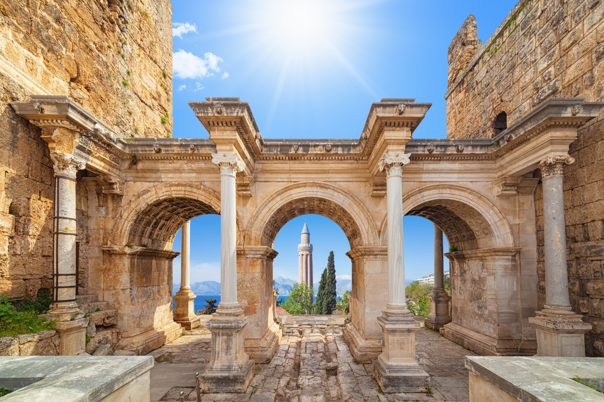
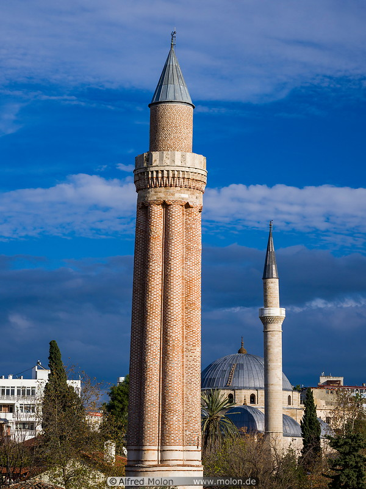
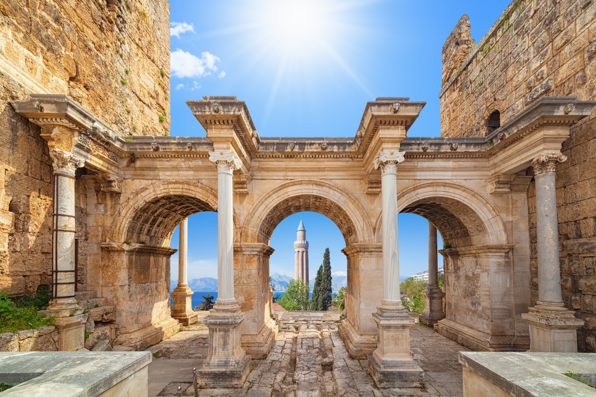
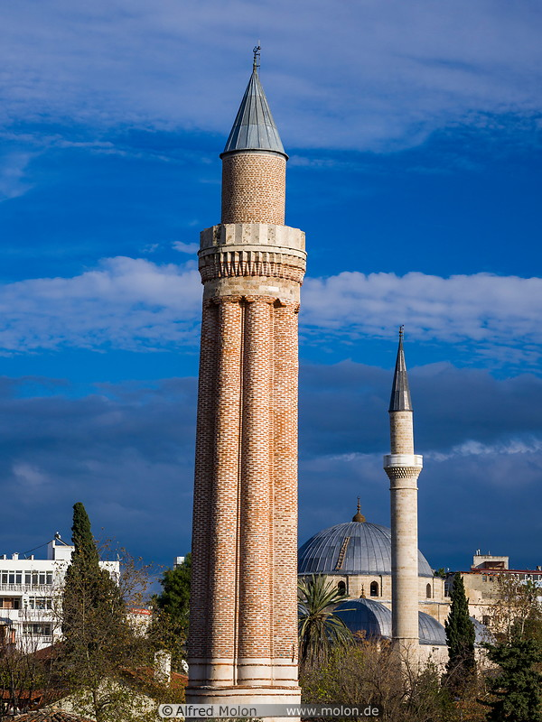

Geführte Tour durch die Altstadt von Antalya
Diese historische Stadtführung führt durch Kaleiçi, den ältesten Stadtteil Antalyas. Entdecke enge Gassen, gut erhaltene osmanische Häuser, das römische Hadrianstor und den Uhrturm.
Etappen der Tour
- Treffpunkt: Uhrturm beim Eingang Kaleiçi
- Besichtigung Hadrianstor
- Spaziergang durch historische Gassen
- Stopps an Moscheen, Brunnen und Innenhöfen
- Besuch des Yivli-Minaretts
- Kurzpause auf einer Aussichtsterrasse mit Blick auf den Hafen
Tourinformationen
Dauer: ca. 2 Stunden
Preis: 20 € pro Person (Kinder bis 12 Jahre: 10 €)
Sprache: Deutsch oder Englisch
Teilnehmerzahl: max. 15 Personen
Verfügbare Termine
- Montag – Samstag: 10:00 Uhr & 16:00 Uhr
- Sonntag: nur auf Anfrage
Tour-Guide
Name: Ayşe Demir
Erfahrung: 8 Jahre Stadtführerin in Antalya
Sprachen: Deutsch, Türkisch, Englisch
Hinweise
- Feste Schuhe empfohlen
- In den Sommermonaten Kopfbedeckung mitbringen
- Fotografieren erlaubt (außer in Moscheen)